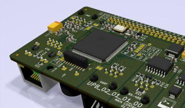
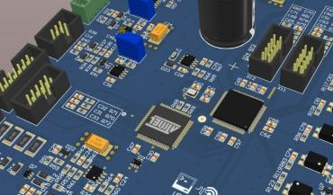
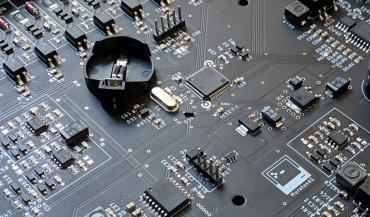
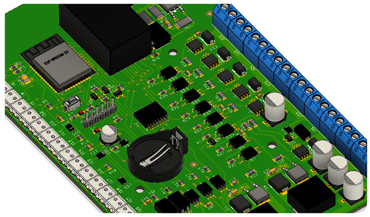
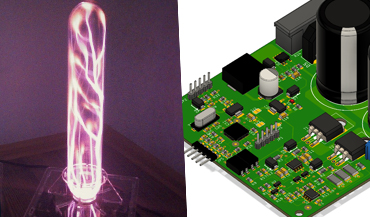

О себе
Занимаюсь коммерческой разработкой электроники более 7 лет. За это время мной было разработано более 20ти устройств различного назначения. Среди которых имеются коммерческие и open-source проекты.
Основная часть времени была затрачена на разработку твердотельных силовых преобразователей, применимых в различных отраслях бытовой и промышленной электроники (источников напряжения, ультразвуковых и индукционных установках).
В настоящие время занимаюсь разработкой силовых установок, сопровождением производства
Мой подход — проектирование электронных устройств это искусство, где важна не только общая композиция, но и мельчайшие детали.
Знания и навыки
Профессиональные навыки:
+ Опыт проектирования Cиловой электроники
+ Опыт проектирования Промышленной автоматики
+ Навык проектирования высокоскоростных схем
+ Навык проектирования аналоговых и цифровых схем
+ Опыт разработки на STM32 (HAL)
+ Опыт разработки комплекта конструкторской документации на электронное устройство:
САПР для электроники
- KiCad
- Altium Designer
САПР вспомогательный
- FreeCAD
- КОМПАС-3D
- Autodesk Fusion 360
+ Опыт в решении проблем ЭМС
+ Навык проектирования источников питания
+ Знание современной элементной базы
+ Навык SPICE моделирования в Micro-Cap
+ Навык моделирования в Simulink
+ Знание технологии серийного производства электроники
+ Опыт разработки на ESP32 (Arduino framework)
+ Имею опыт руководства
Навыки в сфере IT:
+ Опыт разработки на С/C++
+ Опыт работы/сборки Linux (Arch, Debian)
+ Опыт разработки автоматизации на Bash Shell
+ Опыт проектирования сетей (Docker, Etcd)
+ Знание теории разработки программного обеспечение
+ Знание концепции информационной безопасности
+ Базовое знание HTML, JS
Проекты
 Система включает в себя такие устройства как, инвертор, зарядная станция, твердотельный статический переключатель.
Система включает в себя такие устройства как, инвертор, зарядная станция, твердотельный статический переключатель.
Устройства построены на FPGA и STM32, с не типичными аналоговыми каскадами нормализации сигналов. Предназначение устройства, обеспечить конечный потребитель качественным, бесперебойным питанием.

Основана на Stm32. Гибкая система, предназначена для мониторинга и регулирования быстро протекающих процессов технологического характера.
Устройство включает в себя различные протоколы такие как modbus, can, eth. В купе с модульной архитектурой, позволяет удовлетворить любые запросы

Основана на Avr + Altera. Устройство реализует в полной мере процесс регулирования и управления механической резонансной системой.
Устройство оснащено большим количеством цифровых/аналоговых входов-выходов с гальваническими развязками, что обеспечивает гибкую конфигурацию под конкретную технологическую задачу.

Основана на stm32. Устройство обеспечивает удаленное управление процессом плавки металла. Настройка осуществляется ПК посредством ethernet.
Устройство оснащено большим количеством цифровых/аналоговых входов-выходов, что обеспечивает возможность внедрения в большинство современных установок.

Основана на Esp32. Разработка велась в PlatformIO. Устройство обеспечивает контроль всех узлов системы на протяжении полного цикла роста растений. Имеет высокий уровень автоматизации. Настройка осуществляется через WEB-интерфейс.
На борту предусмотрены все необходимые каскады для контроля и управления.
 Установка с газоразрядной лампой имеющая широкий диапазон настроек. Основное преимущество устройства — возможность модуляции сигнала высоковольтного генератора. Поддерживается 4 паттерна с возможность изменения частоты.